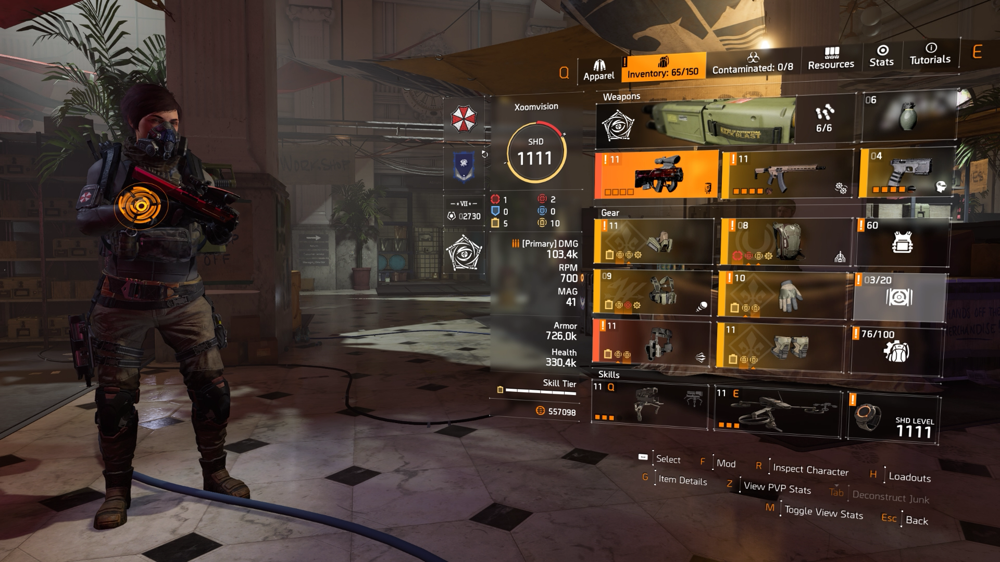

A solo Heroic run of
the American History Museum
Manhunt: Concealed Agenda
High Priority Target: Bardon Schaeffer
A Solo player’s casual run of the Summit
(Challenging)
Seven months after the Green Poison Outbreak, the SHD network shuts down and all agents receive a Division distress call from Washington, D.C.
The player’s agent makes their way to the city where The Division and the remains of the local Joint Task Force have set up their Base of Operations in the White House. After defeating an attack on the White House shortly after arriving in the city, the agent is briefed on the general situation by Manny Ortega, The Division Coordinator for D.C.
The agent learns that much of the city is under the control of three main enemy factions: the Hyenas, the Outcasts, and the True Sons. Ortega instructs the agent to work with fellow agent Alani Kelso to help assist civilian settlements, fight the various enemy groups, and restore the SHD Network.
Meanwhile, Ortega and Kelso uncover information that a cure to Green Poison might be located somewhere in the city, and that President Ellis may have survived the crash of Air Force One and is being held by one of the city's factions. Kelso is reluctant to waste time and resources to rescue Ellis, but Ortega points out that his security clearance may be needed to access the cure.
The agent continues to work to liberate city districts and eventually manages to find and rescue Ellis from Hyena custody. Ellis confirms that a cure to not just Green Poison, but all viral infections, exists, but he can only access it with a special briefcase he had with him on Air Force One.
As the agent has various successes such eliminating high profile and key targets, restoring the SHD network, liberating the city, taking down the Faction leadership and destroying their strongholds. The Endgame starts...
However, as the agent and The Division celebrate their victory, a new faction, the technologically advanced private security contractor Black Tusk, invades the city. Many of D.C.'s landmarks are quickly seized and Ellis goes missing, leaving the agent to head out once again to repel the Black Tusk invasion.
During this time, ECHOs and Comms reveal that the Black Tusk was responsible for the shutting down of the SHD Network and that they had been planning an invasion long before the agent had arrived, supplying arms to the Hyenas and what not. Similarly, the invasion causes mass chaos in D.C., with formerly liberated areas suddenly becoming hot zones and the settlements coming under threat once again.
After a short amount of time passes, both President Ellis and Emeline Shaw are located in the outskirts of Washington, D.C. President Ellis has taken refuge in Camp White Oak, which is under Black Tusk control. The agent assaults the base with a group of JTF for support. The JTF are quickly killed in a trap, leaving just the agents to secure President Ellis. After fighting through waves of Black Tusk, President Ellis manages to escape via helicopter, leaving the agents behind. Emeline Shaw gathers her forces to the Manning National Zoo.
Division agents are given the task of bringing Shaw in, dead or alive. To do this, they are dropped outside the entrance to the zoo, and must secure the monorail line in order to access Shaw. After the agents manage to secure the line, they have to fight through several more waves of Outcasts, and some animals that were left behind, to reach Emeline. In a final stand-off, Division agents must plant explosives to knock out Emeline's weaponized monorail car. During this fight, Emeline is killed, leaving the Outcasts without a leader.
At the same time, a JTF convoy that had previously been assumed to have gone rogue is located. They had been attacked by Outcasts outside Kenley College, and their attackers had secured military-grade technology, a mobile SHD communicator, and several tanks of chemicals that could be used to make bombs. Division agents are tasked with both recovering or destroying the stolen materials, and finding out the final fate of the convoy.
Meanwhile, in D.C. a minor civilian community in the Central Aquarium is under attack from Hyenas, and Division agents receive a distress signal. NSA Site B13 is also being breached by the Black Tusk, which are after the data center held within. While defending the data center, Division agents discover several audio logs detailing the NSA's awareness of Gordon Amherst's radical views.
Division agents receive a transmission from an agent currently scouting out The Pentagon. They were looking to see if DARPA had successfully made a perfusion bioreactor, but they ran into a major Black Tusk operation. Agents in D.C. are tasked with securing and investigating The Pentagon in hopes of recovering the reactor.
Aaron Keener makes a deal with the Black Tusk stationed on Coney Island. They will get Vitaly Tchernenko and in exchange, they'll owe him a favor. The Black Tusk accept and quarantine Tchernenko just in case he had infected himself whilst he was working for Keener. This is when an SHD drone finds the encampment and relays the information back to The White House. Agents are dispatched to Coney Island to recover Vitaly and neutralize the Black Tusk in the area.
Division agents successfully breach the ballpark and rescue Tchernenko, despite heavy mortar barrage. Tchernenko is extracted via helicopter and is taken into Division custody. At this point, while the Black Tusk is retreating, the Cleaners launch a surprise attack. This causes the majority of the Black Tusk to be forced to leave, while their local commander, Dolores Jones, stays behind to make a final stand at the roller coaster. The Cleaners promptly blow it up. At this point, the Cleaners retreat and Division agents clean up the rest of the Black Tusk on Coney Island.
After Dolores Jones was eliminated, a SHD drone got hacked and crashed in New York City. Aaron Keener made an ominous message to Division agents, telling them he'll always be one step ahead of them.
A group of agents moves in on Aaron Keener's suspected location, only to find the room empty. Due to Keener's repeated escapes, Division Command in Lower Manhattan decides to call on backup from D.C. to assist in Keener's capture.
The player, along with Agent Kelso, arrive at the Division Command located in City Hall. The Command is under siege Aaron Keener, his rogue lieutenants, and the Rikers. The building is quickly destroyed and contaminated, becoming a control point later on. With their base destroyed, The Division makes contact with a nearby civilian settlement, Haven, to ask if they can stay there while Aaron Keener is being hunted down. Haven, led by Paul Rhodes, initially denies them access but later begrudgingly allows it under the condition that The Division will leave after Keener is neutralized.
Throughout the hunt against Keener, they went and eliminated his four lieutenants; James Dragov, Theo Parnell, Vivian Conley, and Javier Kajika to get any intel about Keener's whereabouts and his plans. The Division finally managed to get Keener's location, which is on Liberty Island. However, Black Tusk was already there and were planning to eliminate Keener themselves.
Despite Black Tusk's efforts, Division agents managed to eliminate their forces, forcing them to retreat. The agents go through Keener's base and learn that Project Eclipse is a ballistic missile filled with Keener's weaponized virus. Keener was planning to launch the missile on Manhattan, to start a "new beginning".
Despite all the SHD tech equipment at his disposal, the agents managed to disable his missile. Then they went to a prolonged fight against the rogue agent, which ended with him badly wounded. In his final moments, Keener activates the Rogue Network, before ominously taunting the agents before he dies.
Division agents intercept a conversation between Faye Lau and Bardon Schaeffer through Keener's watch and learn that Faye has went rogue and sided with Black Tusk, proclaiming that she will help them in ending The Division once and for all.
A loosely organized hedonistic scavengers that rely on violence and intimidation to prey on struggling civilian encampments. Much like their animal counterparts, the Hyenas are generally opportunistic raiders and scavengers who prey on the weak but can also stand their ground against powerful foes.
A hostile group consisting of bitter survivors of a forced CERA quarantine on Theodore Roosevelt Island and the adjoining areas of the Potomac River and is bent on revenge against the authorities who confined them on the island. The Outcasts embrace an extreme nihilism which fuels the grim fanaticis that drives this fearless organization.
A powerful, well-armed group of paramilitary soldiers is comprised of Joint Task Force deserters and mutineers. Led by a former JTF field commander named Antwon Ridgeway, the True Sons are typical of a warlord-led faction in a conflict zone or failed state. Their ruthlessness and combat prowess make them a formidable force in the field.
The Black Tusk also known as the Black Tusk Special Unit or BTSU, is a major enemy faction that appears at the endgame in Tom Clancy's The Division 2. Operating as a large PMC with ties to the U.S. government, the BTSU invaded Washington, D.C. shortly after the True Sons were pushed out of the Capitol Building.
We have very limited intel on this faction as they seem to hunt primarily SHD agents, but also Rogue Division agents and are hostile to other factions as well.
From the ashes of Joe Ferro's Cleaners, Division agents are yet to experience terror from a more brutal Cleaners thanks to Rogue Agent Vivian Conley. The Cleaners Base of Operations is at the Stranded tanker.
Division Agents took down Larae Barrett in NYC, seven months later a new more deadlier Rikers faction arise led by James Dragov and with the Keener Manhunt ongoing on Manhattan. The Rikers now control the Financial District of Manhattan.
Former Division agents who disavowed the Strategic Homeland Division for one reason or another, and has either lent their services to another factions or are working on their own, both cases working against The Division itself.
Every Agent is equipped with a primary weapon, secondary weapons and a sidearm on their loadouts. Each loadout has 6 pieces of gear which are a mask, a go bag, a holster, and protective gears such as the gloves, knees, and chest protection. Every gear has 3 main stats, Offensive, Defensive and Skills these stats allows the player to be more powerful by matching your current loadout for each specific mission
Each gear has a brand, if the player equips multiple gear from the same brand (up to 3 items), he will receive a set bonus.
Apart from Brand Sets, Division Agents have access to Gear Sets which are specialized gear for your loadout, If you want to go Full DPS, A healer or a skill build, these Gear Sets can be custom tailored for your playstyle
Occasionally, you come across exotic gears that are more powerful that their regular counterparts. Exotic weapons and gears can be equipped at the same time, but you can't equip an exotic gear type on different slot. IE you can't equip another exotic weapon as your secondary or side arm, if you already have an exotic weapon on your primary weapon slot.
Currently creating an interactive map for DC and Manhattan (WonY). Enjoy the Google Map version
An Open-world 3rd person Shooter RPG developed by Massive Entertainment and Ubisoft.
For Collabs and other work related stuff. you can reach me at jarencudilla@gmail.com